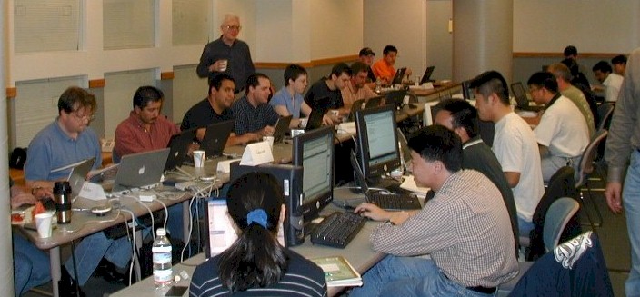

WebDAV
|
WebDAV
|
- WebDAV Face-to-Face Interoperability Testing Event

- September 9-11, 2002
Baskin Engineering Building
University of California at Santa Cruz
Santa Cruz, California, USA"The goal of the WebDAV Interoperability Testing Event is to gather together, in one physical location, developers and testers of WebDAV/DASL/DeltaV/ACL clients and servers so they can exercise as many client/server pairs as possible. Ideally, all functionality of each client will be tested against every server. This will quickly surface interoperability problems. Once identified, these problems can sometimes be fixed on the spot (if developers have brought source code), or can be targeted for resolution in the Draft Standard (i.e., revised) version of RFC 2518."
WebDAV Working Group Interim Meeting
"Concurrent with the interoperability testing event, an Interim WebDAV Working Group Meeting will also be held from 3-6PM on September 9 and 10, and from 9AM to 12noon on September 11."
- WebDAV Working Group Interim Meeting
- 2002-09-09 Session Notes
created 2002-12-13-14:26 -0800 (pst) by orcmid
$$Author: Orcmid $
$$Date: 02-12-13 16:16 $
$$Revision: 5 $